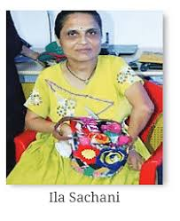

Exploring the Life and Work of Ila Sachani


Ila Sachani is a remarkable artist from Gujarat, India, known for her beautiful Kathiyawadi embroidery. Despite facing physical challenges, Ila has shown incredible determination and creativity in her work. Her life story is an inspiration to many.
Born in a small village, Ila developed a passion for embroidery at a young age. She was fascinated by the vibrant colors and intricate designs that are characteristic of Kathiyawadi art. This style of embroidery often features traditional motifs like animals, flowers, and geometric patterns. Ila learned the craft from her family and quickly became skilled at creating stunning pieces.
What makes Ila's story even more special is her perseverance. Due to her disability, she faced many obstacles, but she never let that stop her from pursuing her dreams. She adapted her techniques and found ways to create beautiful artwork that reflects her culture and heritage. Ila's embroidery not only showcases her talent but also tells stories of her community and traditions.
Over the years, Ila has gained recognition for her work. She has participated in various exhibitions and fairs, where people admire her unique creations. Her art has also provided her with opportunities to teach others about Kathiyawadi embroidery, helping to keep this traditional craft alive.
Ila Sachani's journey is a testament to the power of creativity and resilience. She shows us that with passion and hard work, we can overcome challenges and achieve our goals. Her beautiful embroidery continues to inspire people, reminding us of the importance of art and culture in our lives.